Mensch Mart
After October 7, I felt powerless to help the hostages and families abducted into Gaza. Every time I read about people like Alon Ohel, Avinatan Or, and of course the Bibas family, I would feel so much pain, not just for them but almost moreso for their families.
At the same time, antisemitic rhetoric was spreading like wildfire through my social networks (including from people I considered friends) and I wanted to do something to make a difference.
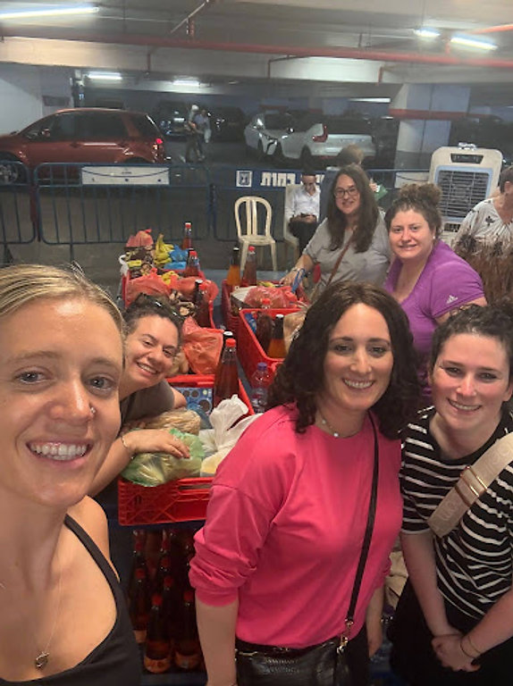
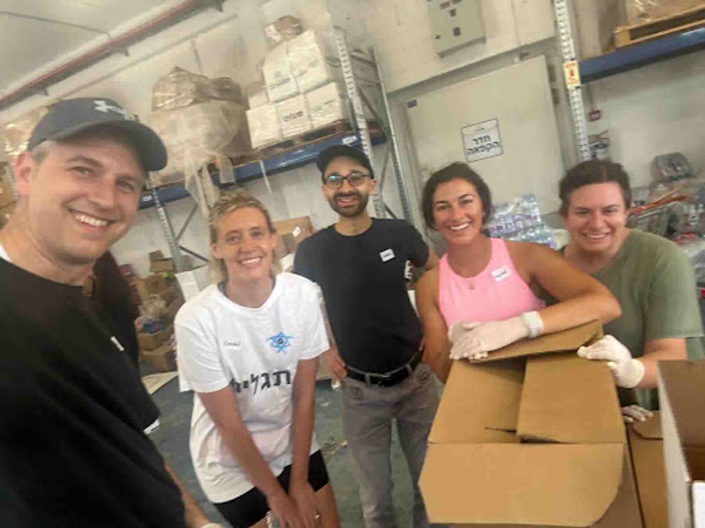
I went to Israel and volunteered on kibbutzim that had been attacked, but I came home still feeling like it wasn't enough. I wanted to use the skills I actually have, making videos that get attention and the scrappy instincts I've built from ten years of startups.
That's how Mensch Mart was born. An online store with clothes in Hebrew, like a hat that says "Miami" for people from Miami. Packers shirts for Packers fans. Babushka sweatshirts for people who love a good Yiddish joke. All the proceeds going to the Hostages and Missing Families Forum.
This idea really resonated with American Jews (and our allies)! So far 4,040 items have gone into the world helping people show their Jewish pride and stand up for who we are. We have 20k+ followers and I get messages every day with photos of people who are wearing our gear proudly out into the world. It takes bravery to be openly Jewish right now but we know that it's more important than ever to stand up for what we believe in.
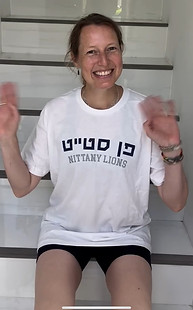
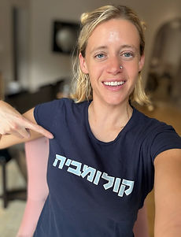
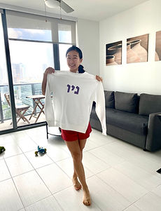
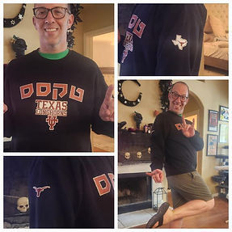
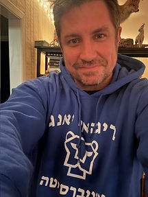
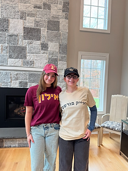
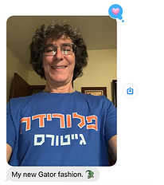
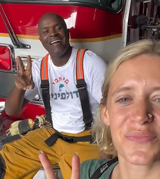
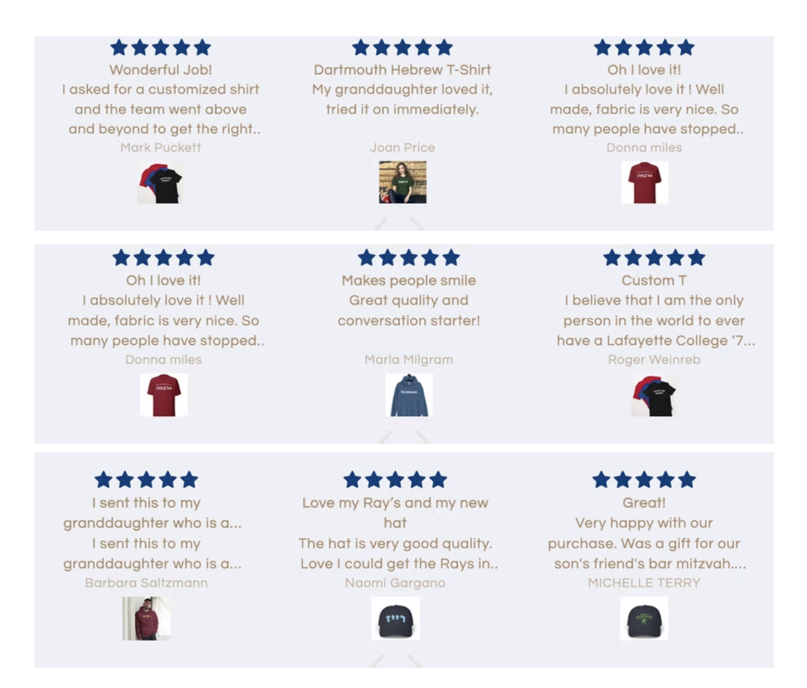
Baruch Hashem that the hostages are now home. Praying for their healing.
Back to Home